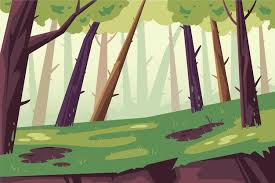
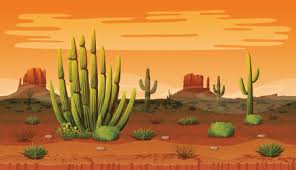
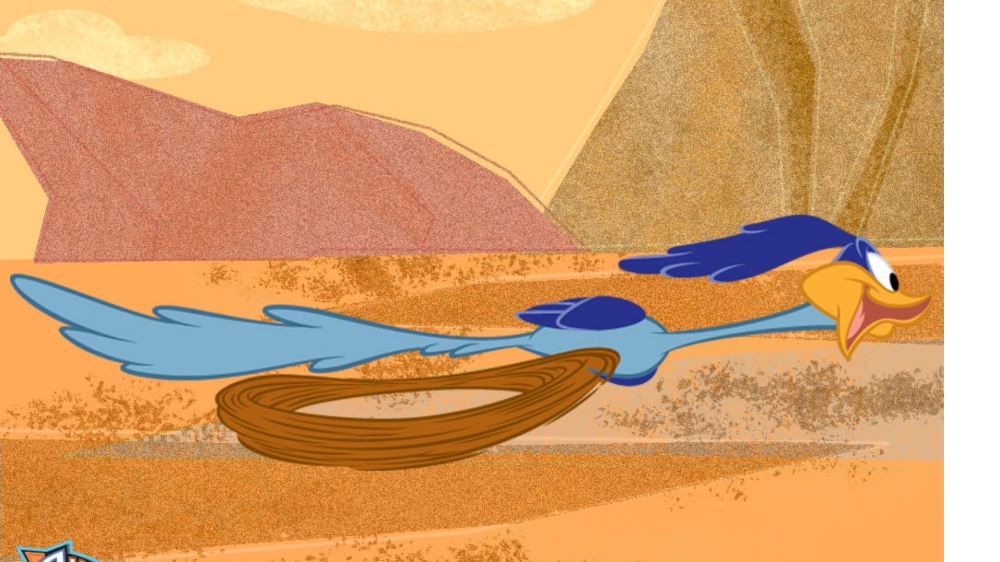
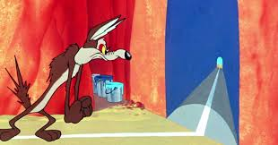
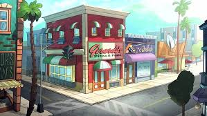
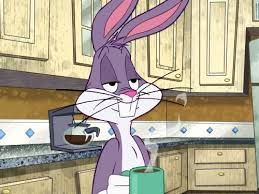
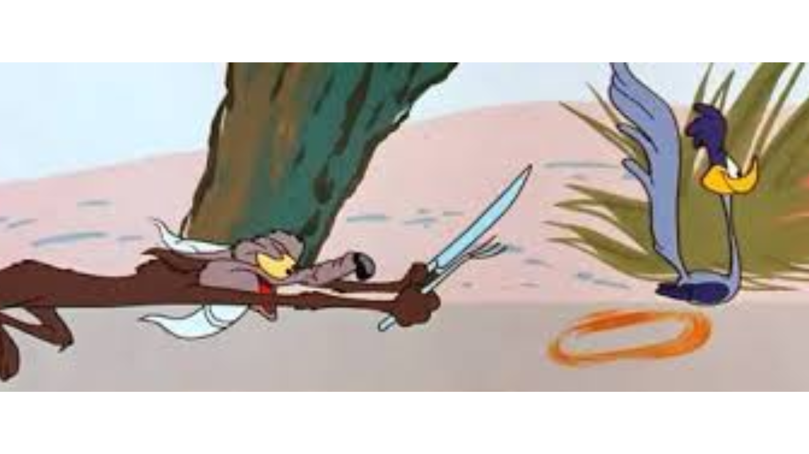

Você Chegou ao mundo Looney e vê uma floresta e um deserto para ir, onde quer ir?

Você chegou na Floresta

Você chegou ao deserto
Procurando o Pernalonga você cai em uma toca.
Você voltou ao mundo normal.

Procurando o coiote você encontra o Papaleguas.

Explorando o deserto, você encontra um tunel.
Na toca você encontra duas passagens.
No tunel Você entra em uma toca

O buraco á esquerda leva você a cidade Looney.
O tunel a direita te leva a um caminho bloqueado.

explorando a cidade você se perde e Encontra o Pernalonga.
Retornando e escolhendo à esquerda, você finalmente encontra uma saida.

Você vai atrás do Papaleguas que entra em uma floresta e quando você esta preste a pergar o pássaro ele foge.

Na floresta você cai em um buraco que parece uma toca.